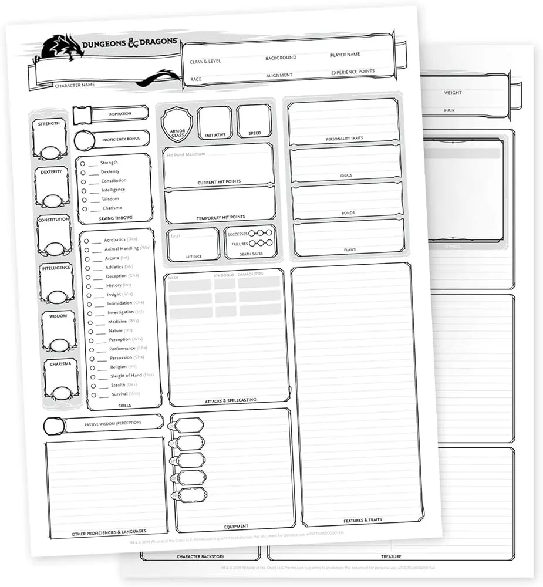
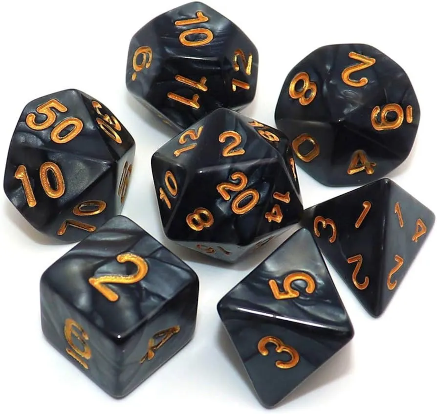

Guía de D&D: Introducción y Reglas Básicas
¿Te atrae la idea de embarcarte en aventuras épicas, luchar contra dragones y resolver misterios en un mundo fantástico lleno de magia y monstruos? Si es así, ¡estás en el lugar correcto! Bienvenido al mundo de Dungeons & Dragons, o D&D para abreviar. Ya seas un completo novato o simplemente busques ponerte al día, esta guía te va a introducir a los conceptos básicos de jugar a D&D y te ayudará a comenzar tu viaje.
¿Qué es Dungeons & Dragons?
D&D es un juego de rol de mesa en el que los jugadores crean personajes y se embarcan en aventuras guiados por un Dungeon Master (DM). El juego se juega con dados, hojas de personaje y, por supuesto, tu imaginación. Es una experiencia de narración colaborativa en la que los jugadores tienen la libertad de tomar decisiones y dar forma al desarrollo de la historia.
Empezar: Materiales Esenciales
- Manual del Jugador: Este es tu guía principal para crear y jugar con tu personaje. Contiene reglas, opciones de personaje, hechizos y más. Puede ser físico o en PDF! Los manuales básicos de DnD se pueden descargar completamente gratis!
- Dados Poliédricos: Necesitarás un conjunto de dados, que incluye un dado de 20 caras (d20), un dado de 12 caras (d12), un dado de 10 caras (d10), un dado de 8 caras (d8), un dado de 6 caras (d6) y un dado de 4 caras (d4). Podes encontrar conjuntos de dados en tiendas de hobbies o usarlos en línea.
- Hoja de Personaje: Estas hojas te ayudan a llevar un registro de las estadísticas, habilidades y equipo de tu personaje. Podes encontrar hojas de personaje imprimibles en línea o usar una aplicación o pagina.
- Imaginación: D&D se trata de creatividad y narración. Así que, trae tu imaginación y prepárate para sumergirte en un mundo nuevo.
Creación de tu Personaje
Ahora que tenes tus materiales, vamos a crear tu primer personaje. Los personajes de D&D son una combinación de raza, clase, trasfondo y alineación, y tienen atributos como fuerza, destreza, constitución, inteligencia, sabiduría y carisma.
- Elige una Raza: Hay varias razas para elegir, como humanos, elfos, enanos y más. Tu elección afectará a las habilidades y apariencia de tu personaje.
- Selecciona una Clase: Las clases determinan el rol de tu personaje en el grupo. Puedes elegir ser mago, ladrón, guerrero o clérigo, entre otras. Cada clase tiene habilidades únicas.
- Trasfondo: El trasfondo de tu personaje aporta sabor y una historia. Puede ser un acólito, un criminal o un noble, entre otros.
- Alineación: Decide la alineación moral y ética de tu personaje. ¿Es legal, neutral o caótico? ¿Bueno, neutral o malo?
- Atributos: Asigna valores a los seis atributos de tu personaje (fuerza, destreza, constitución, inteligencia, sabiduría y carisma). Estos afectarán las habilidades de tu personaje.
- Elige Habilidades y Equipo: Según tu clase y trasfondo, selecciona habilidades y equipo inicial.
Lo Básico del Juego
Una vez que tu personaje esté listo, es hora de comenzar a jugar. Aquí tienes un resumen simplificado de cómo funciona el juego de D&D:
- El Dungeon Master (DM): El DM es el narrador y árbitro del juego. Describe el mundo, crea personajes no jugadores (PNJ) y guía a los jugadores a través de la aventura.
- Tirar Dados: La mayoría de las acciones en D&D se resuelven lanzando un dado de 20 caras (d20) y sumando modificadores basados en las habilidades y atributos de tu personaje. Por ejemplo, tirar para atacar en combate o realizar una comprobación de habilidad.
- Turnos y Rondas: En combate, los jugadores y los enemigos se turnan según su iniciativa. Una ronda es un ciclo en el que todos los participantes toman su turno.
- Interpretación de Roles: No temas sumergirte en el personaje de tu personaje. Habla y actúa como lo haría tu personaje e interactúa con otros jugadores y PNJ.
- Resolver Desafíos: El juego a menudo implica resolver rompecabezas, combatir monstruos y tomar decisiones. Las habilidades, habilidades y decisiones de tu personaje influirán en el resultado.
Conclusión
Dungeons & Dragons es un juego de imaginación, colaboración y aventura. Las reglas pueden parecer abrumadoras al principio, pero a medida que juegues, te sentirás más cómodo con ellas. Lo más importante es divertirse y crear historias memorables con tus amigos. Entonces, reúne a tu grupo, emprende tu primera misión y ¡que comience tu épico viaje!
Recuerda que esta guía solo cubre los conceptos básicos, y D&D ofrece posibilidades infinitas para la creatividad y la narración de historias. A medida que juegues y ganes experiencia, descubrirás la riqueza de las mecánicas del juego y el potencial narrativo. ¡Disfruta de tu aventura en D&D